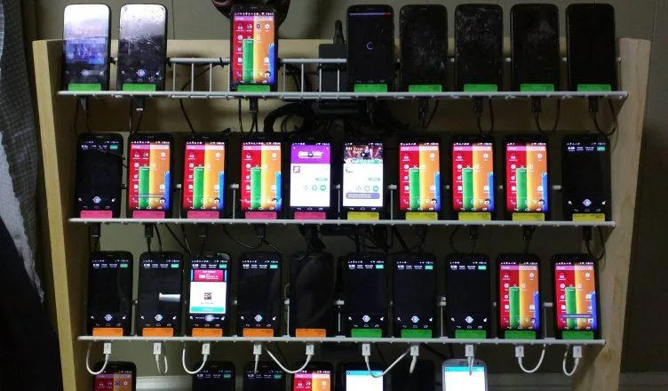

Vuonna 2024 tapahtui jotain historiallista: ensimmäistä kertaa kymmeneen vuoteen bottiliikenne ylitti inhimillisen liikenteen määrän internetissä. Kun katsot livevideota jossa on 50 000 katsojaa, arviolta puolet niistä ei ole ihmisiä – kun näet julkaisun jolla on kymmeniä tuhansia tykkäyksiä, osa niistä on ostettu puhelinfarmilta joka toimii jossain Aasiassa tai Afrikassa.
Kun katsot livevideota jossa on 50 000 katsojaa, arviolta puolet niistä ei ole ihmisiä. Kun näet julkaisun jolla on kymmeniä tuhansia tykkäyksiä, osa niistä on ostettu puhelinfarmilta joka toimii jossain Aasiassa tai Afrikassa. Kun luet kommentteja joissa ihmiset ovat yhtä mieltä jostain poliittisesta asiasta, osa niistä kommenteista ei ole ihmisten kirjoittamia. Tämä ei ole salaliittoteoria. Tämä on mitattu tosiasia jota yritykset, lainvalvontaviranomaiset ja tutkijat ovat dokumentoineet systemaattisesti jo vuosia.
Mutta se mikä tekee tästä ilmiöstä enemmän kuin teknisen kuriositeeetin, on se yhteys joka kulkee arkisen kaupallisen bottibisnesken ja laajemman yhteiskunnallisen vaikuttamisen välillä. Sama infrastruktuuri jolla myydään Instagram-seuraajia influencereille on se sama infrastruktuuri jolla voidaan muokata vaalituloksia. Sama tekniikka jolla rikosverkosto rakentaa miljoonia väärennettyjä tilejä pankkihuijauksia varten on se sama tekniikka jolla mikä tahansa riittävän motivoitunut ja resursoitu toimija voi muokata julkista mielipideilmastoa. Skaalaus on erilainen, motiivit ovat erilaiset, mutta pohjarakenne on identtinen.
Millaisia botteja on olemassa ja miten ne toimivat
Botti on ohjelma joka tekee automaattisesti jotain mitä ihminen muuten tekisi, ja se kuvaus kattaa kaiken hyödyllisestä haitalliseen. Noin 37 prosenttia kaikesta bottiliikenteestä on niin sanottuja hyviä botteja: hakukoneiden indeksointirobotit jotka käyvät läpi kaikki internetsivut tallentaakseen niiden sisällön hakutuloksiin, yritysten valvontaohjelmat jotka seuraavat palvelinten tilaa, asiakaspalvelun chatbotit jotka vastaavat yksinkertaisiin kysymyksiin. Nämä ovat osa sitä infrastruktuuria jolla internet toimii.
Loput 63 prosenttia on haitallisia tai kyseenalaisia, ja ne jakautuvat karkeasti kolmeen luokkaan. Yksinkertaisimmat skriptibotit ovat koodipätkiä jotka tekevät toistuvasti yhtä asiaa, esimerkiksi generoivat klikkauksia verkkomainoksille tai lataavat sivuja palvelinten kuormittamiseksi, ja ne tunnistetaan suhteellisen helposti koska niiden käyttäytyminen on liian säännönmukaista. Sosiaaliset botit ovat monimutkaisempia ohjelmia jotka imitoivat ihmisen sosiaalisen median käyttäytymistä, julkaisevat, kommentoivat, tykkäävät ja seuraavat tiettyjen sääntöjen mukaan, ja ne on suunniteltu niin, että niiden toimintamallit muistuttavat ihmistä tarpeeksi, jotta automaattiset suodattimet eivät tunnista niitä. Kolmas ja vaikein luokka on tekoälybotit jotka generatiivisen kielimallin avulla luovat alkuperäistä tekstisisältöä, vastaavat muiden kommentteihin kontekstuaalisesti ja pystyvät ylläpitämään pitkiäkin keskusteluja tavalla jota on käytännöllisesti katsoen mahdotonta erottaa ihmisen kirjoittamasta tekstistä pelkällä lukemisella.
Botteja löytyy kaikista niistä paikoista joissa ihmiset ovat verkossa. Snapchat on jo pitkään kärsinyt feikki-profiileista jotka lähestyvät käyttäjiä automaattisesti. Moninpeleissä kuten erilaisissa MMORPG-peleissä toimii botteja jotka keräävät pelivaluuttaa myytäväksi reaalirahalla tai jotka osallistuvat pelikeskusteluihin tavalla joka vaikuttaa inhimilliseltä. Online-pokerin botti-ongelma on ollut tiedossa jo vuosia ja se on muuttanut sen mitä termi vastustaja oikeasti tarkoittaa digitaalisessa ympäristössä. Arvostelualustat joihin ihmiset luottavat eniten ostopäätöstensä tueksi, olivatpa ne sitten Google Maps, Amazon tai sovelluskaupat, ovat kaikki alttiita systemaattiselle arvostelumaniulaatiolle jonka automatisointi on halpaa ja tehokasta.
Mitä on mobile phone farming ja miten se toimii käytännössä
Kuvittele huone jossa on lattiastaan kattoon ulottuva hyllykkö täynnä älypuhelimia. Jokainen puhelin on kytketty sähköön, jokaisessa on oma SIM-korttinsa, jokainen on rekisteröity omana ainutlaatuisena laitteena. Tältä näyttää puhelinfarmi. Brittiläinen valokuvaaja Jack Latham vieraili Hanoin puhelinfarmeissa ja kuvasi niitä kirjaansa varten: toimistoja joissa oli kokonaiset seinät puhelimia, hiljaisia huoneita joissa kymmenet laitteet tekivät samaan aikaan samaa asiaa, tykkäsivät, kommentoivat, seurasivat, katsoivat.

Puhelinfarmit eroavat tavallisista ohjelmistoboteista siinä, että ne käyttävät oikeita fyysisiä laitteita oikeilla SIM-korteilla, mikä tekee niiden tunnistamisesta huomattavasti vaikeampaa. Sosiaalisen median alustat käyttävät laitteen tunnistamiseen device fingerprinting -tekniikkaa joka tunnistaa puhelimen ainutlaatuisista teknisistä ominaisuuksista, näytön resoluutiosta, akun tilasta ja anturidatasta, ja oikealla puhelimella sekä oikealla SIM-kortilla jokainen laite näyttää aidolta käyttäjältä eikä mikään automaattinen suodatin pysty kertomaan eroa. Palvelut joita puhelinfarmit myyvät ovat suoraviivaisia: 1 000 tykkäystä tai seuraajaa maksaa noin euron, videoiden katselukertoja saa vieläkin halvemmalla, ja yksi operaattori pystyy hallitsemaan satojen ja jopa tuhansien puhelinten verkkoa samanaikaisesti.
TikTok poisti 348 miljoonaa feikki-tiliä pelkästään vuoden 2024 kolmannella kvartaalilla (kvartaalia = 3 kuukautta), ja sosiaalisen median alustat poistavat yhteensä yli kaksi miljardia väärää tiliä vuosittain. Nämä luvut kertovat enemmän siitä kuinka paljon niitä luodaan kuin siitä kuinka tehokkaasti niitä poistetaan, koska feikki-tilin luominen on niin nopeaa ja halpaa, että poistaminen ei pysy luomistahdin perässä.
Miten algoritmit nostavat sisältöä ja miksi botit osaavat hyödyntää tätä
Some alustojen algoritmit toimivat kaikki samalla peruslogiikalla: ne seuraavat reaktioita ja nostavat esiin sen sisällön joka saa nopeimmin eniten oikeanlaisia reaktioita. Katseluaika, tykkäykset, kommentit, jaot ja livekatsojamäärä ovat kaikki signaaleja joita algoritmi käyttää päättäessään pitääkö sisältöä nostaa laajemmalle yleisölle vai ei. Tämä rakenne on suunniteltu löytämään suosittu sisältö tehokkaasti, mutta se on samalla täydellinen hyökkäyspinta keinotekoiselle manipulaatiolle.
Live-lähetysten kohdalla tämä näkyy selkeimmin. Kun lähetys alkaa, algoritmi seuraa kuinka nopeasti katsojia kertyy ja kuinka aktiivisia he ovat, ja jos lähetys saa ensimmäisten minuuttien aikana riittävän vahvan signaalin, se nousee alustan etusivulle, explore-osioon tai suositellun sisällön listalle. Jos kyseiseen lähetykseen pumpataan muutama tuhat bottikatsojaa heti alkuhetkillä, algoritmi tulkitsee sen suosituksi ja alkaa suosittelemaan sitä oikeille käyttäjille. Oikeat katsojat saapuvat koska algoritmi nosti sisällön, mikä vahvistaa algoritmin käsitystä suosiosta entisestään. Keinotekoinen ensihetki laukaisee aidon orgaanisen reaktion.
Sama mekanismi toimii tavallisilla videoilla ja julkaisuilla. Kun julkaisu saa ensimmäisten tuntien aikana runsaasti reaktioita, algoritmi laajentaa sen jakelua progressiivisesti suuremmille yleisöille. Jos reaktiot syntyvät koordinoidusta bottitoiminnasta eikä orgaanisesta kiinnostuksesta, tulos on silti sama: algoritmi näyttää sisältöä yhä useammille ihmisille. Trendaavat aiheet toimivat identtisesti – koordinoitu bottijoukkue joka aloittaa samanaikaisesti kommentoimaan tiettyä aihetta voi nostaa sen trendeihin ennen kuin yksikään oikea ihminen on reagoinut.
CapitalOne Shopping Research arvioi, että feikki-arvostelut maksavat keskimääräiselle verkko-ostajalle 125 dollaria vuodessa, ja globaalisti arvostelupetos on 770 miljardin dollarin liiketoiminta. Originality.ai-tutkimuksen mukaan 23,7 prosenttia kiinteistövälittäjien arvioista Zillow-palvelussa oli todennäköisesti tekoälyn luomia vuonna 2025, kun sama luku oli 3,63 prosenttia vuonna 2019.
Kuka käyttää tätä vaikuttamiseen ja miksi jokainen toimija voi teoriassa hyödyntää samaa infrastruktuuria

Kaupallinen motiivi on yksinkertaisin: seuraajamäärä on rahallinen arvo, arvostelumäärä on myyntiargumentti, ja live-katsojamäärä on neuvottelupositio mainostajia vastaan. Tähän käytetään puhelinfarmeja ja botteja joka päivä ympäri maailmaa täysin avoimesti, koska se ei useimmissa maissa ole lainvastaista, ainoastaan alustojen käyttöehtojen vastaista.
Rikollinen käyttö on seuraava taso: samat väärät identiteetit joita käytetään ostettuihin Instagram-seuraajiin voidaan käyttää kaksivaiheisen tunnistautumisen kiertämiseen, feikki-sijoitussivustoihin tai suoranaiseen kiristykseen. Tähän palataan SIMCARTEL-tapauksessa artikkelin lopussa.
Poliittinen tai yhteiskunnallinen käyttö on se josta julkisesti puhutaan vähiten mutta joka on merkittävin. Kun rikolliset ja kaupalliset toimijat rakentavat tätä infrastruktuuria, he tekevät samalla tekniikan saatavaksi kaikille joilla on resursseja ja motivaatio. Kynnys ei ole tekninen vaan taloudellinen, ja riittävästi resursoitu toimija, olivatpa ne yrityksiä, poliittisia kampanjoita tai valtiollisia toimijoita missä tahansa maassa, pystyy ostamaan pääsyn samaan infrastruktuuriin tai rakentamaan oman.
Tätä ei tarvitse yhdistää yhteenkään yksittäiseen valtioon tai organisaatioon ymmärtääkseen ongelman ytimen: sama infrastruktuuri joka nyt toimii kaupallisessa myynnissä on teknisesti identtinen sen kanssa jota voidaan käyttää muokkaamaan käsitystä siitä, mitä kansalaiset ajattelevat, mitkä teemat ovat esillä julkisessa keskustelussa, ja mikä näyttää nauttivan laajaa tukea. Ero rikollisen botti-operaation ja poliittisen vaikuttamisoperaation välillä ei ole tekniikka vaan tavoite.Tapaus Cambridge Analytica – kun datayhtiö ohjasi poliittisia viestejä psykologisen profiloinnin avulla
Cambridge Analytica -skandaali paljasti jotain hieman erilaista kuin bottikampanjat mutta saman ilmiökentän sisältä: sen miten yksityinen datayhtiö pystyi käyttämään sosiaalisesta mediasta kerättyä dataa tuottaakseen poikkeuksellisen tarkkaa psykografista profilointia ja kohdentamaan poliittisia viestejä juuri oikeille ihmisille juuri oikealla tavalla.
Vuosina 2013–2015 psykologian tutkija Aleksandr Kogan kehitti Facebook-sovelluksen nimeltä This Is Your Digital Life, joka keräsi dataa sen käyttäjistä mutta myös kaikkien heidän Facebook-ystäviensä profiileista ilman näiden suostumusta. Kun sovellusta käytti 270 000 ihmistä, kerättyjen profiilien määrä nousi lopulta 87 miljoonaan, koska Facebookin silloiset tietosuojasäännöt sallivat kolmannen osapuolen sovelluksille pääsyn käyttäjien ystäväverkostoihin. Kogan myi datan Cambridge Analyticalle, joka käytti sitä OCEAN-mallin mukaiseen psykografiseen profilointiin: avoimuus, tunnollisuus, ekstroverttius, sovinnollisuus ja neuroottisuus, ja yhtiö väitti pystyvänsä ennustamaan näistä viidestä piirteestä henkilön poliittiset preferenssit paremmalla tarkkuudella kuin henkilö pystyisi itse arvioimaan.
Yhtiö pystyi tunnistamaan ne äänestäjät tietyssä marginaaliosavaltiossa jotka olivat epäpolitisoituneita mutta tavoitettavissa tietyllä emotionaalisella viestillä, ja kohdentamaan heille juuri sen viestin joka heidän psykografisen profiilinsa mukaan resonoisi parhaiten. Kyse ei ollut bottiliikenteestä siinä teknisessä mielessä, mutta kyse oli massadatan käyttämisestä ihmisten mielipiteisiin vaikuttamiseen tavalla jota kohteet eivät tienneet tapahtuvan. Paljastus johti Facebookin toimitusjohtajan Mark Zuckerbergin kuulemiseen Yhdysvaltain kongressissa ja lopulta FTC:n viiden miljardin dollarin sakkoon Facebookille. Cambridge Analytica lopetti toimintansa paljastusten jälkeen, mutta dataa kerättiin edelleen, profilointitekniikat jäivät olemaan ja sama bisnes jatkui uusilla nimillä.
Tapaus SIMCARTEL – rikollisjärjestö ja 49 miljoonaa väärää tiliä
Lokakuun 10. päivänä 2025 Latvian poliisi teki ratsian yhdessä Europolin, Eurojustin sekä Suomen, Viron ja Itävallan viranomaisten kanssa operaatiossa SIMCARTEL. Viisi latvialaista ja kaksi muuta henkilöä otettiin kiinni. Takavarikoitiin 1 200 SIM-box-laitetta joihin mahtui 40 000 aktiivista SIM-korttia, viisi palvelinta, satoja tuhansia käyttämättömiä SIM-kortteja, neljä luksusautoa, noin 431 000 euroa pankkitileiltä ja noin 516 000 dollaria kryptovaluuttaa. Seitsemän ihmistä oli rakentanut 49 miljoonaa väärää tiliä yli kahdeksankymmenen maan puhelinnumeroilla.
Toiminta oli crime-as-a-service -malli jossa verkosto vuokrasi puhelinnumeroita muille rikollisille. Asiakas maksoi numerosta, sai kertakäyttöisen koodin kaksivaiheiseen tunnistautumiseen, loi väärennettyn tilin kryptopörssissä, nettipankissa tai sosiaalisen median alustalla ja käytti sitä petoksiin tai kiristykseen. Samaa infrastruktuuria käytettiin feikki-sijoitussivustoihin, väärennettyihin nettikauppoihin, lainvalvontaviranomaisten esiintymiseen identiteettivarkauksissa ja perhepetoksiin joissa esiinnytään uhrin läheisen nimissä. Viranomaisten vahvistama minimivahinko on 4,5 miljoonaa euroa Itävallassa ja 420 000 euroa Latviassa, mutta pääasialliset uhrit olivat käyttäjiä jotka eivät kuulu Europolin toimivaltaan, eli todelliset luvut ovat todennäköisesti moninkertaiset.
SIMCARTEL-tapaus on konkreettinen esimerkki siitä mitä sillä infrastruktuurilla pystyy tekemään. Seitsemän ihmistä rakentamassa 49 miljoonaa identiteettiä. Jos kaupallinen rikollisuus pystyy tähän, ajattele mitä se kertoo siitä mikä on mahdollista, kun resurssit, motivaatio ja organisaatiokyky ovat suuruusluokkaa isommat.
Rehellinen johtopäätös tästä kaikesta ei ole se, että internet on kokonaan kuollut tai että kaikki mitä näet verkossa on valetta. Johtopäätös on se, että internet on muuttunut paikaksi jossa näkyvä konsensus ei enää ole todiste todellisesta konsensuksesta, jossa suosittu ei enää automaattisesti tarkoita orgaanisesti suosittua, ja jossa sama tekninen infrastruktuuri jonka avulla voidaan myydä viisi tähteä verkkokauppatuotteelle voidaan käyttää muokkaamaan käsitystäsi siitä mitä muut ihmiset ajattelevat. Terveen skeptisyyden soveltaminen siihen miltä jokin asia näyttää suosittuna tai konsensuksena ei ole kyynisyyttä vaan ainoa rationaalinen tapa navigoida verkkoympäristössä jossa yli puolet liikenteestä ei tule ihmisiltä.